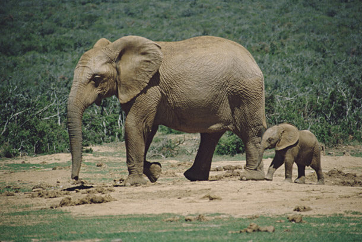

Млекопитающее отряда хоботных. Высота в плечах до 4 м, вес — 7,5 т. Ареал обитания – Африка южнее Сахары. Включает два современных вида – саванный слон и лесной слон. Больше своих индийских сородичей и самое большое животное среди сухопутных. В природе осталось всего 500-600 тысяч этих великанов. Необычайно умное животное, способное к взаимопомощи и взаимовыручке. Например, если один слон не может избавиться от присосавшейся пиявки, другой может взять палку и освободить приятеля от кровопийцы.
